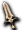
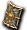
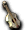
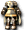
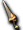
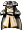
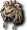

寶箱
寶箱
 彩券
彩券
寶箱
編輯寶箱（深茶）
 寶箱（深褐） 寶箱（深褐） | Lv | AC | MC | AAR | SAR |
| HP:454 | 1 | 58 | 40 | -60 | -100 |
| 經驗值 | 名聲值 | 金錢 | 攻擊屬性 | 防禦屬性 | |
| 1 | 100 | 15 | 無 | 無 | |
| STR | DEX | INT | WIS | CON | |
| 3 | 3 | 200 | 200 | 3 |
備註
掉落物品
混合藥水、古代捲軸、祝福捲軸、詛咒捲軸、賢者之葉、迪斯眼珠、土耳其石、摩斯皮、霍羅帕、魔法之花、生命之泉、哥布林頸肉、哥布林肉、海盜要塞入場券、海市蜃樓地圖、回憶之石、科馬利克、古老的短劍、強韌木刀、生鏽銅劍、青銅劍、未鑑定銅劍、卡奇巴澤爾、凱爾斧、米可斧、特隆拳套、零星之杖、巫師魔石、各職Lv1光服（戰・修・盜・聖・魔）、各職Lv11光服（戰・修・盜・聖・魔）、未鑑定魔法塔爾加、雷姆帕特盾、火之束帶、水之束帶、地之束帶、風之束帶、機械束帶、羅達束帶、尚護膝、達格護膝、鎖戒、格雷戒指、微風戒指、掉落戒指、尼爾護符、阿斯護符、水之護符
編輯寶箱（淺茶）
| 寶箱（淺茶） | Lv | AC | MC | AAR | SAR |
| HP:1473 | 1 | 58 | 40 | -60 | -100 |
| 經驗值 | 名聲值 | 金錢 | 攻擊屬性 | 防禦屬性 | |
| 1 | 100 | 15 | 無 | 無 | |
| STR | DEX | INT | WIS | CON | |
| 3 | 3 | 3 | 200 | 200 |
備註
掉落物品
古代捲軸、詛咒捲軸、祝福捲軸、海市蜃樓地圖、童話車票[艾莉絲區]、童話車票[格烈佛區]、童話車票[胡桃鉗區]、童話車票[石化區]、海盜要塞入場券、茄子、酸蘋果、魔力之泉、混合藥水、鎮靜劑、解毒劑、移動輔助藥、強力打擊、屬性確認、內特瑪那、火焰碎片、冰槍術、雷球術、救援術、超級治癒、下劈踢、未鑑定庫巴拳套、未鑑定助祭杖、未鑑定斯瓦德劍、神佑女魔導士之袍、未鑑定魔法羅馬圓盾、黃金鐲、火之戒指、風之戒指、水之戒指、阿斯戒指、尼爾戒指、泥土護符、鞋子、吊襪帶
編輯寶箱（紅）
| 寶箱（紅） | Lv | AC | MC | AAR | SAR |
| HP:4,198 | 1 | 58 | 40 | -60 | -100 |
| 經驗值 | 名聲值 | 金錢 | 攻擊屬性 | 防禦屬性 | |
| 1 | 100 | 15 | 無 | 無 | |
| STR | DEX | CON | INT | WIS | |
| 3 | 3 | 3 | 200 | 200 |
備註
掉落物品
各職31光服、各職51光服、命運護符、火焰護符、雨之護符、暴雪護符、倫斯護符、三層火之皮帶、三層火之皮帶、三層水之皮帶、三層風之皮帶、三層地之皮帶、格雷戒指、掉落戒指、鎖戒、微風戒指、泥土戒指、烈焰戒指、冰雹戒指、賽戒指、疾風戒指、泥土戒指、火龍之戒、風龍之戒、阿斯龍之戒、水龍之戒、尼爾龍之戒、神授耳環、豎琴耳環、最後之刃(Lv50)、鋼之肉體、布里茲維克、超級恢復術、王者之風、古代捲軸、詛咒捲軸、祝福捲軸、攻城鎚、攻城梯、城門警備兵召喚書、城門修理工召喚書、混合藥水、視力恢復藥、鎮靜劑、解毒劑、移動輔助藥、魔力之泉、酸蘋果、茄子、海盜要塞入場券
編輯寶箱（金）
| 寶箱（金） | Lv | AC | MC | AAR | SAR |
| HP:15428 | 1 | 98 | 70 | -60 | -100 |
| 經驗值 | 名聲值 | 金錢 | 攻擊屬性 | 防禦屬性 | |
| 1 | 100 | 15 | 無 | 不死 | |
| STR | DEX | INT | WIS | CON | |
| 3 | 3 | 3 | 200 | 200 |
備註
掉落物品
骰子魔石、長劍、鉻拳套、卡奇匕首、卡爾塔鎚、卡隆斧、比卡杖、各職Lv71光服、未鑑定魔法騎士盾、循環護符、烈焰護符、冰雹護符、疾風護符、泥土護符、火之腰帶、水之腰帶、風之腰帶、地之腰帶、火之重皮帶、水之重皮帶、風之重皮帶、地之重皮帶、火焰戒指、暴雪戒指、倫斯戒指、佩特戒指、雨之戒指、萊德、火龍之戒、風龍之戒、阿斯龍之戒、水龍之戒、尼爾龍之戒、神授耳環、伊斯護膝、皮特遜護膝、居合斬、燕返、火焰拳、亂刺、聖幻、風藤、回憶之書、回憶之書(團體用)、回憶之石、回憶之石(團體用)、古代捲軸、詛咒捲軸、祝福捲軸、視力恢復藥、鎮靜劑、解毒劑、移動輔助藥、混合藥水、茄子、魔力之泉、酸蘋果、海盜要塞入場券、科馬利克
| 名稱:擬態怪 | Lv | AC | MC | AAR | SAR | 掉落物品 |
| HP:20,000 | 99 | 50 | 30 | -60 | -60 | 斬擊、月斬、 烈焰斬、燕返、打擊、鎚擊、強力打擊、雙重打擊、突刺、挖刺、雙重刺擊、雙重抓擊、亂刺、沙彈、毒、鑑定術、普雷亞、踢擊、閃電拳、機關槍踢、火焰拳、 烈焰斬、燕返、打擊、鎚擊、強力打擊、雙重打擊、突刺、挖刺、雙重刺擊、雙重抓擊、亂刺、沙彈、毒、鑑定術、普雷亞、踢擊、閃電拳、機關槍踢、火焰拳、 屬性賦予、快速施法、突刺之槍、枷鎖之歌 and more… 屬性賦予、快速施法、突刺之槍、枷鎖之歌 and more… |
| 經驗值 | 名聲值 | 金錢 | 攻擊屬性 | 防禦屬性 | ||
| 1200 | 1000 | 200 | 暗黑 | 不死 | ||
| STR | DEX | CON | INT | WIS | ||
| 3 | 3 | 200 | 200 | 200 |
備註：掉落物直接落在地上
^
| 名稱:潘朵拉之盒 | Lv | AC | MC | AAR | SAR | 掉落物品 |
| HP:1,000,000 | 99 | -20 | 35 | 20 | -50 | - |
| 經驗值 | 名聲值 | 金錢 | 攻擊屬性 | 防禦屬性 | ||
| 1 | 150000 | 0 | 暗黑 | 不死 | ||
| STR | DEX | CON | INT | WIS | ||
| 200 | 200 | 200 | 200 | 200 |
備註：掉落物直接落在地上
| 名稱:公會寶箱 | Lv | AC | MC | AAR | SAR | 掉落物品 |
| ＨＰ: | - | - | - | - | - | 艾克斯弗比亞、  格拉姆之劍、芬弗約納、 破壞之刃、地之劍、破神槌、布雷斯鎚、 破壞之刃、地之劍、破神槌、布雷斯鎚、 龍爪、好奇之杖、鏡盾、梅杜莎守護、 龍爪、好奇之杖、鏡盾、梅杜莎守護、 陽紋章之盾、暗紋章之盾、 熾天使之羽、角蛇 熾天使之羽、角蛇 |
| 圖片 | 經驗值 | 名聲值 | 金錢 | 攻擊屬性 | 防禦屬性 | |
| - | - | - | - | - | ||
| STR | DEX | CON | INT | WIS | ||
| - | - | - | - | - |
備註：
彩券
| 名稱:彩券 | 一般道具 | 彩券限定道具 |
| 強韌木刀、青銅劍、魔法闊劍、生鏽銅劍、古老的短劍、卡爾塔鎚、卡隆斧、卡奇匕首、庇祐之杖、暴風珠、信仰魔石、卡斯魔石、夏斯魔石、黃金槍、曼陀林、塔姆塔姆鼓、塔拉布卡鼓、帕潘琵琶、各職81服、月光服、風之服、搞笑之服、艾里亞爾禮服、食人魔護膝、德魯依護膝、神授耳環、豎琴耳環、合金耳環、阿斯之鍊、水龍之鍊、熾燄之鍊、呢喃之鍊、丹桑達爾涼鞋、尼爾之鍊、古老的斯泰利羅、古老的瑪那里羅、速度藥水(高速)、速度藥水(超高速)、諾肯肉、摩斯酒、酸蘋果、風藤、燕返(掉落)、狂戰士之怒、鬥氣發顯、復活術、淨化烈焰、普雷亞、亂刺、托克辛、屬性賦予、特殊染色藥(可愛紅)、特殊染色藥(可愛紫)、特殊染色藥(可愛綠)、口袋腰包、高級錢包、技能增強藥水、智慧水藥 and more… |  羅斯魔石、帕斯魔石、莿脊之槍、皮鞭、女王鞭、莎法娜之鞭、蛇鞭、狂熱之鞭、巴亞鼓、托斯鼓、 羅斯魔石、帕斯魔石、莿脊之槍、皮鞭、女王鞭、莎法娜之鞭、蛇鞭、狂熱之鞭、巴亞鼓、托斯鼓、 水之吉他、火之吉他、各職21En可服、各職41En可服、各職61En可服、各職71En可服、湖之服、 騎士服、吉永守衛、邁恩斯守衛、命中手套、腰袋、帕吉的袋子、 手提包、背包 手提包、背包 | |
| 能力 | wiki 沒寫 | |
| 名稱:福袋 | 一般道具 | 福袋道具 |
| 不明 | 不明 | |
| 能力 | wiki 沒寫 | |
| 名稱:裝備彩券 | 一般道具 | 裝備彩券限定道具 |
| 日冕釘棒、凱爾斧、匕首、蛇鞭、羅莎琳之鞭、潘特拉、蟻治療者、薩巴斯之杖、梅菲特之杖、神聖權杖、地之豎琴、各職Lv1服、各職Lv11服、各職Lv21光服、各職Lv51服、各職Lv71服、各職Lv81服、各職Lv81光服、各職Lv91服、各職Lv91麻痺防禦服、星星圓盾、魔法牆(新)、神佑風之腰帶[2]、解放大地護符、尼爾之鍊、戰士耳環、軍團頭盔、魔法皮帶、解毒狂手套、自由奔馳者、自由騎手、維維爾塞克、En可戒 and more… | 祕儀之杖、哀號之杖、凋零之杖、  靈魂之槍、魔法瑪瑙之槍、魔法琥珀之槍、 聖潔騎士甲、聖潔女騎士甲、亞維農守衛[S型]、比尼守衛[S型]、拉克羅守衛[S型]、貝爾倫守衛[S型]、拉辛守衛[S型]、莫魯亞守衛[S型]、盧卡湖之騎士鎧、盧卡湖之騎士女鎧、地位之冠、 女神之冠、世界王者之冠、世界之冠、 女神之冠、世界王者之冠、世界之冠、 鯊魚帽、鯊魚帽、 鯊魚帽、鯊魚帽、 良好禮儀狼帽、最佳禮儀狼帽、 良好禮儀狼帽、最佳禮儀狼帽、 良好禮儀熊貓帽、最佳禮儀熊貓帽、神佑卡繆腰帶[2]、 良好禮儀熊貓帽、最佳禮儀熊貓帽、神佑卡繆腰帶[2]、 力量完美護膝、 力量完美護膝、 月光獅子帽、月光貓咪帽、偽造惡魔、 仿冒天使 仿冒天使 | |
| 能力 | wiki 沒寫 | |
| 名稱:可疑的捲軸 | 一般道具 | 可疑的捲軸限定道具 |
| 艾莉絲票券、格利佛票券、胡桃鉗票券、石化區票券、首領區票券[1]、首領區票券[2]、首領區票券[3]、斯歐米之門、米魯里斯森林之門、阿德利文連結、斯歐米地下城連結、迪格堡壘連結、魔界村地下城連結、米魯里斯連結、魔界村連結、盧亞斯森林連結、塵之手、電漿塵項鍊、電漿全能鎧甲、電漿洞足、古代捲軸、詛咒捲軸、祝福捲軸、甲殼捲軸、破邪捲軸-地、力量捲軸-地、破邪捲軸-天、古舊魔力捲軸[1]摩斯變身捲軸[2]蓬變身捲軸[3]迪德變身捲軸[13]摩斯船長變身捲軸[18]騎士卡普里變身捲軸[19]卡普里科領主變身捲軸[20]叔叔諾肯變身捲軸[23]木諾肯變身捲軸[24]塵變身捲軸[25]綠齒輪變身捲軸[27]瑟拉變身捲軸[30]梅德之手變身捲軸[31]神之手變身捲軸[32]索因金塊變身捲軸[33]阿茲莫變身捲軸[37]哈迪姆巴變身捲軸[40]凱蒂變身捲軸[42]安迪亞斯變身捲軸[47]萬聖南瓜變身捲軸[54]大麥町巴基變身捲軸[58]凱蒂獵人變身捲軸[59]死靈凱斯塔變身捲軸[61]桑巴懷基變身捲軸[62]桑丘懷基變身捲軸[64]馬雷克斯變身捲軸[67]薩科帕林克變身捲軸[69]德羅伊坎魔導變身捲軸[72]驅動守衛變身捲軸[75]米魯里斯嚮導變身捲軸[76]行動氣球變身捲軸[77]機械惡犬變身捲軸[79]圖妮射擊變身捲軸[80]圖妮變身捲軸[81]圖妮博克變身捲軸[88]燭火變身捲軸[90]老鼠燭變身捲軸[95]艾莉絲變身捲軸[96]死亡之眼變身捲軸[85]大塔特拉變身捲軸[98]梅杜莎變身捲軸[99]丹皮亞斯部下變身捲軸[104]凱森變身捲軸[105]冠軍斯米爾變身捲軸[110]提拉諾變身捲軸[113]布羅尼變身捲軸[114]長槍溫迪哥變身捲軸[115]劍溫迪哥變身捲軸[116]弗里克爾變身捲軸[119]阿納坎變身捲軸[120]弗蘭格里翁變身捲軸[122]艾米斯變身捲軸[125]赫爾阿切克變身捲軸 | ||
| 能力 | wiki 沒寫 | |